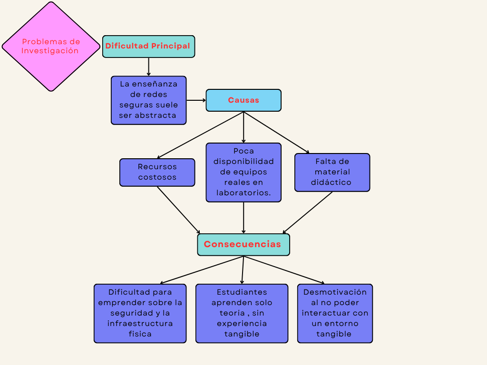
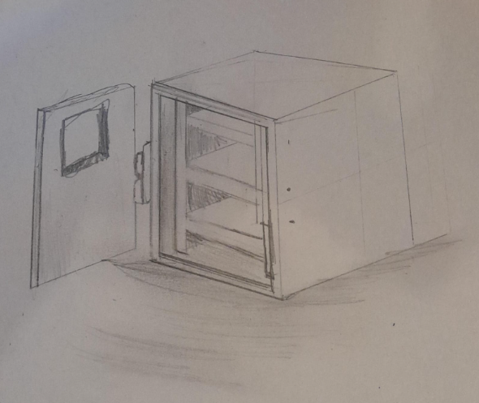

Semana 3 y 4: Tema elegido
Creación de un Mini Centro de Datos Didáctico. Este bloque incluye investigación de usuarios, mapas de problema y prototipado.
Creación de un Mini Centro de Datos Didáctico
Este proyecto busca desarrollar un modelo funcional de mini centro de datos que permita a los estudiantes visualizar, experimentar y comprender el funcionamiento de redes seguras, combinando la teoría con la práctica para una mejor asimilación del conocimiento.
Empatizar con las Necesidades
Limitaciones en la Experiencia de Aprendizaje: Los estudiantes no tienen una experiencia práctica con redes seguras, lo que limita su comprensión y habilidades en el área.
Comunidad Afectada:
- Estudiantes de redes y comunicaciones
- Docentes que requieren herramientas didácticas
- Instituciones educativas que buscan recursos accesibles
Mapa de problemas
Si los estudiantes tuvieran acceso a un mini centro de datos físico, podrían comprender mejor cómo se conectan y protegen los sistemas de red en la vida real.
Lluvias de Ideas
Primer Boceto del Proyecto
Prototipar ordenados
Resumen del proyecto
El objetivo es desarrollar un modelo funcional que permita a los estudiantes visualizar, experimentar y comprender redes seguras combinando teoría y práctica.
Empatizar con las necesidades
Limitaciones: los estudiantes no tienen experiencia práctica con redes seguras, lo que limita su comprensión y habilidades.
Comunidad afectada
- Estudiantes de redes y comunicaciones
- Docentes que requieren herramientas didácticas
- Instituciones educativas
Lluvias de ideas y prototipos
Se realizaron múltiples bocetos y prototipos iniciales para validar el concepto del mini centro.